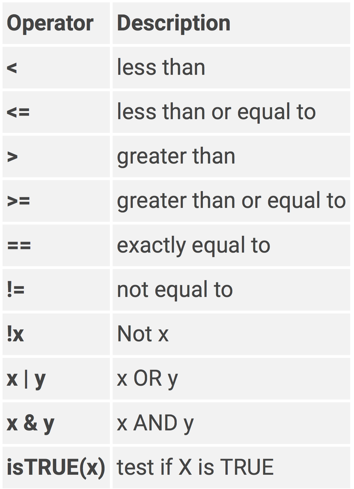

Chapter 5 Data Manipulation using dplyr
In this Chapter you will learn the fundamentals of data manipulation in R. In the Getting Started in R section you learned about the various types of objects in R. The most important object you will be using is the dataframe. Last Chapter you learned how to import data files into R as dataframes. Now you will learn how to do stuff to that dataframe using the dplyr package (which is of course part of the tidyverse)

dplyr is one of the most amazing packages in R. It uses a Grammar of Data Manipulation that is intuitive and easy to learn. The language of dplyr will be the underlying framework for how you will think about manipulating a dataframe.
dplyr uses intuitive langauge that you are already familiar with. As with any R function, you can think of functions in the dplyr package as verbs - that refer to performing a particular action on a dataframe. The core dplyr functions are:
rename()renames columnsfilter()filters rows based on their values in specified columnsselect()selects (or removes) columnsmutate()creates new columns based on transformation from other columns, edits values within existing columnsgroup_by()splits dataframe into separate groups based on specified columnssummarise()aggregates across rows to create a summary statistic (means, standard deviations, etc.)
For more information on these functions Visit the dplyr webpage
If you have not done so already, install the dplyr package
install.packages("dplyr")You will also need the tidyr package (a tidyverse package) for this Chapter
install.packages("tidyr")
Save a new R script file as 6_dplyr.R
For this Chapter we will use an example data set from the Flanker task. This data set is a tidy raw data file for over 100 subjects on the Flanker task. There is one row per Trial per Subject and there is RT and Accuracy data on each Trial. Each Trial is either congruent or incongruent.
What we will want to do is calculate a FlankerEffect for each Subject so that we end up with one score for each Subject.
Go ahead and download the example data set and save it wherever you wish. We will talk about how to organize your data and R scripts in section III. Workflow.
5.1 Setup
At the top of your script load the three packages you will need for this Chapter
## Setup
library(readr)
library(dplyr)
library(tidyr)Notice how I added a commented line at the top. Adding comments to your scripts is highly advisable, as it will help you understand your scripts when you come back to them after not working on them for a while. You only need to add a single # to create a commented line.
You will also notice that it printed out some warning messages. Sometimes different packages have the same function names. So when you load a package it may override or mask functions from other packages that are already loaded.
5.2 Import
Import the data file you downloaded. Refer to Chapter 5 for importing data into R.
import <- read_csv("Data Files/tidyverse_example.csv")It is always a good idea to get to know your dataframe before you start messing with it. What are the column names? What kind of values are stored in each column? How many observations are there? How many Subjects? How many Trials? etc.
What are the column names? use colnames() for a quick glance at the column names
colnames(import)## [1] "Subject" "TrialProc" "Trial"
## [4] "Condition" "RT" "ACC"
## [7] "Response" "TargetArrowDirection" "SessionDate"
## [10] "SessionTime"To take a quick look at the first few rows of a dataframe use head().
head(import)## # A tibble: 6 x 10
## Subject TrialProc Trial Condition RT ACC Response TargetArrowDire…
## <dbl> <chr> <dbl> <chr> <dbl> <dbl> <chr> <chr>
## 1 14000 practice 1 incongru… 1086 1 left left
## 2 14000 practice 2 incongru… 863 1 left left
## 3 14000 practice 3 congruent 488 1 right right
## 4 14000 practice 4 incongru… 588 1 right right
## 5 14000 practice 5 congruent 581 1 right right
## 6 14000 practice 6 incongru… 544 1 right right
## # … with 2 more variables: SessionDate <chr>, SessionTime <time>This gives you a good idea of what column names you will be working with and what kind of values they contain.
To evaluate what are all the unique values in a column you can use unique(). You can also use this in combination with length() to evaluate how many unique values are in a column.
unique(import$Condition)## [1] "incongruent" "congruent"unique(import$Trial)## [1] 1 2 3 4 5 6 7 8 9 10 11 12 13 14 15 16 17
## [18] 18 19 20 21 22 23 24 25 26 27 28 29 30 31 32 33 34
## [35] 35 36 37 38 39 40 41 42 43 44 45 46 47 48 49 50 51
## [52] 52 53 54 55 56 57 58 59 60 61 62 63 64 65 66 67 68
## [69] 69 70 71 72 73 74 75 76 77 78 79 80 81 82 83 84 85
## [86] 86 87 88 89 90 91 92 93 94 95 96 97 98 99 100 101 102
## [103] 103 104 105 106 107 108 109 110 111 112 113 114 115 116 117 118 119
## [120] 120 121 122 123 124 125 126 127 128 129 130 131 132 133 134 135 136
## [137] 137 138 139 140 141 142 143 144 145 146 147 148 149 150 151 152 153
## [154] 154 155 156 157 158 159 160 161 162 163 164 165 166 167 168 169 170
## [171] 171 172 173 174 175 176 177 178 179 180 181 182 183 184 185 186 187
## [188] 188 189 190 191 192max(import$Trial)## [1] 192length(unique(import$Subject))## [1] 410unique(import$TrialProc)## [1] "practice" "real"unique(import$ACC)## [1] 1 0All these functions we just used from colnames() to unique() were to temporarily evaluate our data. They are not required to perform the actual data analysis. Therefore, I usually just type these in the console. A general rule of thumb is that if it is not required to be saved in your Script file then just type it in the console.
Okay let’s take a look at how to use the dplyr functions to score this data.
5.3 rename()
We do not really need to, but let’s go ahead and rename() a column. How about instead of ACC let’s label it as Accuracy. Pretty simple
data <- rename(import, Accuracy = ACC)rename() is really only useful if you are not also using select() or mutate(). In select() you can also rename columns as you select them to keep. This will be illustrated this later
Notice that I passed the output of this function to a new object data. I like to keep the object import as the original imported file and any changes will be passed onto a new dataframe, such as data. This makes it easy to go back and see what the original data is. Because if we were to overwrite import then we would have to execute the read_csv() import function again to be able to see the original data file, just a little more tedious.
5.4 filter()
filter() is an inclusive filter and requires the use of logical statements. In Chapter 2: Basic R I talked a little bit about logical statements. Here is a list of logical operators in R:

In addition to these logical operators, these functions can be used infilter():
is.na()- include if missing!is.na()- include if not missingbetween()- values that are between a certain range of numbersnear()- values that are near a certain value
We do not want to include practice trials when calculating the mean on RTs. We will use filter() to remove these rows. First let’s evaluate the values in these columns
unique(import$TrialProc)
## [1] "practice" "real"
unique(import$Condition)
## [1] "incongruent" "congruent"We can specify our filter() in a couple of different ways
data <- filter(data,
TrialProc != "practice",
Condition != "neutral")or
data <- filter(import,
TrialProc == "real",
Condition == "congruent" | Condition == "incongruent")Specifying multiple arguments separated by a comma , in filter() is equivalent to an & (and) statement.
In the second option, since there are two types of rows on Condition that we want to keep we need to specify Condition == twice, separated by | (or). We want to keep rows where Condition == "congruent" or Condition == "incongruent"
Notice that the arguments have been separated on different lines. This is okay to do and makes it easier to read the code. Just make sure the end of the line still has a comma.
Go ahead and view data. Did it properly remove practice trials? How about neutral trials?
unique(data$TrialProc)
## [1] "real"
unique(data$Condition)
## [1] "incongruent" "congruent"Again you should type these in the console NOT in the R Script!
There is a lot of consistency of how you specify arguments in the dplyr package.
You always first specify the dataframe that the function is being performed on, followed by the arguments for that function.
Column names can be called just like regular R objects, that is without putting the column name in
" "like you do with strings. If all you know is dplyr, then this might not seem like anything special but it is. Most non-tidyverse functions will require you to put" "around column names.
5.5 select()
select() allows you to select which columns to keep and/or remove.
Let’s keep Subject, Condition, RT, Trial, and Accuracy and remove TrialProc, TargetArrowDirection, SessionDate, and SessionTime.
select() is actually quite versatile - you can remove columns by specifying certain patterns. I will only cover a couple here, but to learn more Visit the select() webpage
We could just simply select all the columns we want to keep
data <- select(data, Subject, Condition, RT, Trial, Accuracy)alternatively we can specify which columns we want to remove by placing a - in front of the columns
data <- select(data, -TrialProc, -TargetArrowDirection,
-SessionDate, -SessionTime)or we can remove (or keep) columns based on a pattern. For instance SessionDate and SessionTime both start with Session
data <- select(data, -TrialProc, -TargetArrowDirection,
-starts_with("Session"))You might start realizing that there is always more than one way to perform the same operation. It is good to be aware of all the ways you can use a function because there might be certain scenarios where it is better or even required to use one method over another. In this example, you only need to know the most straightfoward method of simply selecting which columns to keep.
You can also rename variables as you select() them… let’s change Accuracy back to ACC… just beacuse we are crazy!
data <- select(data, Subject, Condition, RT, Trial, ACC = Accuracy)We are keeping Subject, Condition, RT, Trial, and renaming ACC to Accuracy.
5.6 mutate()
mutate() is a very powerful function. It basically allows you to do any computation or transformation on the values in the dataframe. You can
change the values in already existing columns
create new columns based on transformation of other columns
5.6.1 Changing values in an existing column
Reaction times that are less than 200 milliseconds most likely do not reflect actual processing of the task. Therefore, it would be a good idea to not include these when calculating means.
What we are going to do is is set any RTs that are less than 200 milliseconds to missing, NA. First let’s make sure we even have trials that are less than 200 milliseconds. Two ways to do this. 1) View the dataframe and click on the RT column to sort by RT. You can see there are RTs that are as small as 1 millisecond! Oh my, that is definitely not a real reaction time. 2) you can just evaluate the minimum value in the RT column:
min(data$RT)
## [1] 0Now lets mutate()
data <- mutate(data, RT = ifelse(RT < 200, NA, RT))Since we are replacing values in an already existing column we can just specify that column name, RT = followed by the transformation. Here we need to specify an if…then… else statment. To do so within the mutate() function we use the function called ifelse().
ifelse() evaluates a logical statement specified in the first argument, RT < 200. mutate() works on a row-by-row basis. So for each row it will evaluate whether RT is less than 200. If this logical statement is TRUE then it will perform the next agrument, in this case sets RT = NA. If the logical statement is FALSE then it will perform the last argument, in this case sets RT = RT (leaves the value unchanged).
5.6.2 Creating a new column
Let’s say for whatever reason we want to calculate the difference between the RT on a trial minus the overall grand mean RT (for now, accross all subjects and all trials). This is not necessary for what we want in the end but what the heck, let’s be a little crazy. (I just need a good example to illustrate what mutate() can do.)
So first we will want to calculate a “grand” mean RT. We can use the mean() function to calculate a mean.
mean(data$RT, na.rm = TRUE)
## [1] 529.1414Since we replaced some of the RT values with NA we need to make sure we specify in the mean() function to remove NAs by setting na.rm = TRUE.
We can use the mean() function inside of a mutate() function. Let’s put this “grand” mean in a column labeled grandRT.
First take note of how many columns there are in data
ncol(data)
## [1] 5So after calculating the grandRT we should expect there to be one additional column for a total of 6 columns
data <- mutate(data, grandRT = mean(RT, na.rm=TRUE))Cool!
Now let’s calculate another column that is the difference between RT and grandRT.
data <- mutate(data, RTdiff = RT - grandRT)We can put all these mutate()s into one mutate()
data <- mutate(data,
RT = ifelse(RT < 200, NA, RT),
grandRT = mean(RT, na.rm = TRUE),
RTdiff = RT - grandRT)Notice how I put each one on a seperate line. This is just for ease of reading and so the line doesn’t extend too far off the page. Just make sure the commas are still there at the end of each line.
5.7 group_by()
This function is very handy if we want to perform functions seperately on different groups or splits of the dataframe. For instance, maybe instead of calculating an overall “grand” mean we want to calculate a “grand” mean for each Subject seperately. Instead of manually breaking the dataframe up by Subject, the group_by() function does this automatically in the background. Like this…
data <- group_by(data, Subject)
data <- mutate(data,
RT = ifelse(RT < 200, NA, RT),
grandRT = mean(RT, na.rm = TRUE),
RTdiff = RT - grandRT)You will now notice that each subject has a different grandRT, simply because we specified group_by(data, Subject). Let’s say we want to do it not just grouped by Subject, but also Condition.
data <- group_by(data, Subject, Condition)
data <- mutate(data,
RT = ifelse(RT < 200, NA, RT),
grandRT = mean(RT, na.rm = TRUE),
RTdiff = RT - grandRT)group_by() does not only work on mutate() - it will work on any other functions you specify after group_by().
I suggest exercising caution when using group_by() because the grouping will be maintained until you specify a different group_by() or until you ungroup it using ungroup(). So I always like to ungroup() immediately after I am done with it.
data <- group_by(data, Subject, Condition)
data <- mutate(data,
RT = ifelse(RT < 200, NA, RT),
grandRT = mean(RT, na.rm = TRUE),
RTdiff = RT - grandRT)
data <- ungroup(data)5.8 summarise()
The summarise() function will reduce a data frame by summarising values in one or multiple columns. The values will be summarised on some statistical value, such as a mean, median, or standard deviation.
Remember that in order to calculate the FlankerEffect for each subject, we first need to calculate each subject’s mean RT on incongruent trials and their mean RT on congruent trials
We’ve done our filtering, selecting, mutating, now let’s aggergate RTs accross Condition to calculate mean RT. We will use a combo of group_by() and summarise(). summarise() is almost always used in conjunction with group_by().
data <- group_by(data, Subject, Condition)
data <- summarise(data,
RT.mean = mean(RT, na.rm = TRUE))
data <- ungroup(data)To summarise() you need to create new column names that will contain the aggregate values. RT.mean seems to make sense to me.
What does the resulting data frame look like? There should be three rows per subject, one for incongruent trials, one for congruent trials, and one for neutral trials. You can see that we now have mean RTs on all conditions for each subject.
Also, notice how non-group_by columns got removed: Trial, and ACC.
5.9 spread()
Our data frame now looks like
head(data)## # A tibble: 6 x 3
## Subject Condition RT.mean
## <dbl> <chr> <dbl>
## 1 14000 congruent 394.
## 2 14000 incongruent 487.
## 3 14001 congruent 389.
## 4 14001 incongruent 406.
## 5 14002 congruent 452.
## 6 14002 incongruent 508.Ultimately, we want to have one row per subject and to calculate the difference in mean RT between incongruent and congruent conditions. It is easier to calculate the difference between two values when they are in the same row. Currently, the mean RT for each condition is on a different row. What we need to do is reshape the dataframe. To do so we will use the spread() function from the tidyr package.
The tidyr package, like readr and dplyr, is from the tidyverse set of packages. The spread() function will convert a long data frame to a wide dataframe. In other words, it will spread values on different rows across different columns.
In our example, what we want to do is spread() the mean RT values for the two conditions across different columns. So we will end up with is one row per subject and one column for each condition. Rather than incongruent, and congruent trials being represented down rows we are spreading them across columns (widening the data frame).
The two main arguments to specify in spread() are
key: The column name that contains the variables to create new columns by (e.g. “Condition”)
value: The colunn name that contains the values (e.g. “RT”)
data <- spread(data, key = Condition, value = RT.mean)Now our dataframe looks like
head(data)## # A tibble: 6 x 3
## Subject congruent incongruent
## <dbl> <dbl> <dbl>
## 1 14000 394. 487.
## 2 14001 389. 406.
## 3 14002 452. 508.
## 4 14003 563. 659.
## 5 14004 520. 643.
## 6 14005 469. 540.From here it is pretty easy, we just need to create a new column that is the difference between incongruent and congruent columns. We can use the mutate() function to do this
data <- mutate(data, FlankerEffect = incongruent - congruent)head(data)## # A tibble: 6 x 4
## Subject congruent incongruent FlankerEffect
## <dbl> <dbl> <dbl> <dbl>
## 1 14000 394. 487. 93.6
## 2 14001 389. 406. 17.5
## 3 14002 452. 508. 56.0
## 4 14003 563. 659. 95.9
## 5 14004 520. 643. 123.
## 6 14005 469. 540. 71.4Perfect! Using the readr, dplyr, and tidyr packages we have gone from a “tidy” raw data file to a dataframe with one row per subject and a column of FlankerEffect scores.
5.10 Pipe Operator %>%
One last thing about the dplyr package. dplyr allows for passing the output from one function to another using what is called a pipe operatior.
The pipe operator is: %>%
This makes code more concise, easier to read, and easier to edit. When you pass the output of one function to another with %>% you do not need to specify the dataframe (input) on the next function. %>% implies that the input is the output from the previous funciton, so this is made implicit.
We can pipe all the functions in the chapter together as such
## Setup
library(readr)
library(dplyr)
library(tidyr)
## Import
import <- read_csv("Data Files/tidyverse_example.csv")
## Score
data <- import %>%
rename(Accuracy = ACC) %>%
filter(TrialProc == "real") %>%
select(Subject, Condition, RT, Trial, ACC = Accuracy) %>%
group_by(Subject, Condition) %>%
mutate(RT = ifelse(RT<200, NA, RT),
grandRT = mean(RT, na.rm=TRUE),
RTdiff = RT - grandRT) %>%
summarise(RT.mean = mean(RT, na.rm = TRUE)) %>%
ungroup() %>%
spread(key = Condition, value = RT.mean) %>%
mutate(FlankerEffect = incongruent - congruent)Virtually all the R scripts you write will require the dplyr package. The more you know what it can do, the easier it will be for you to write R Scripts. I highly suggest checking out these introductions to dplyr.
https://dplyr.tidyverse.org https://cran.r-project.org/web/packages/dplyr/vignettes/dplyr.html
Learn more advanced but common data manipulations in the next chapter